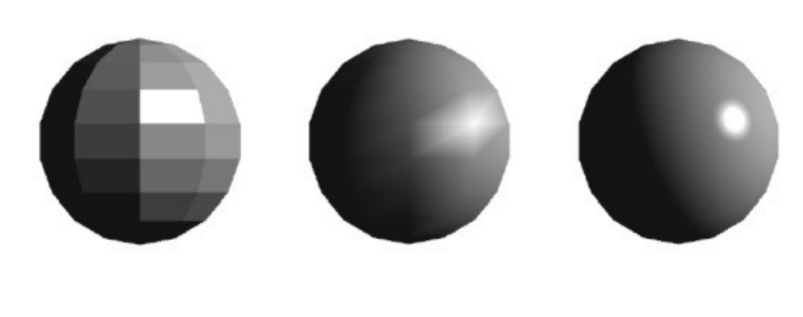
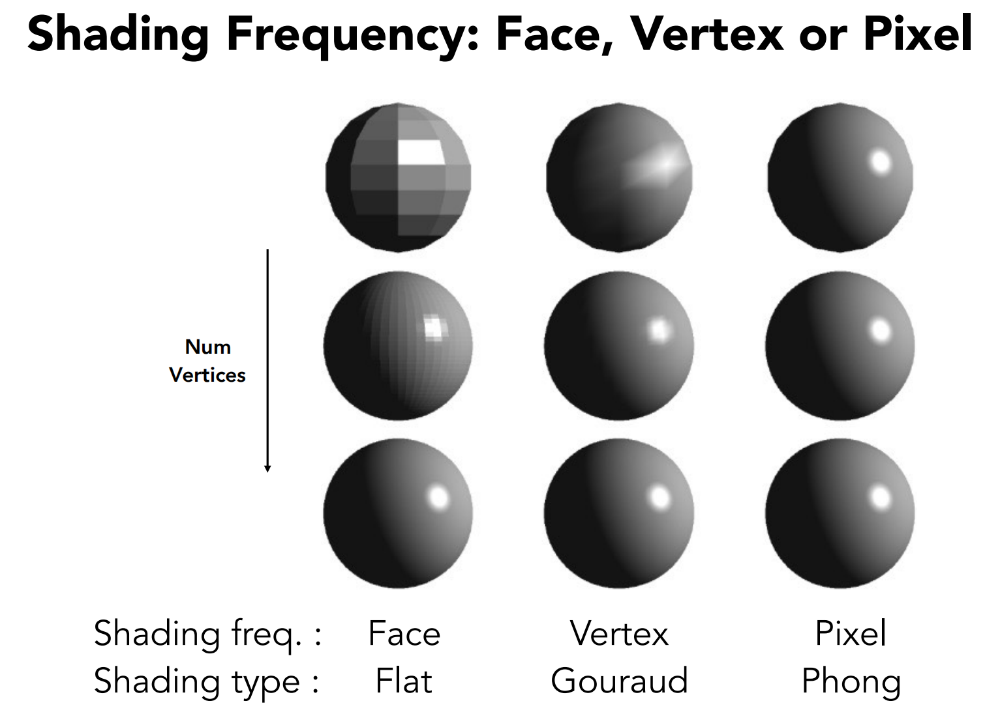
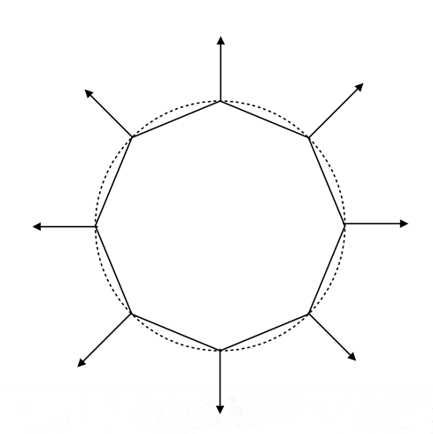
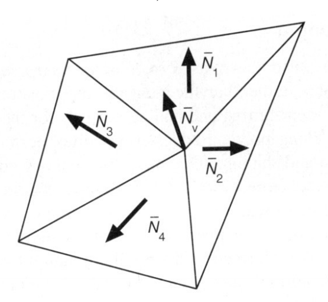
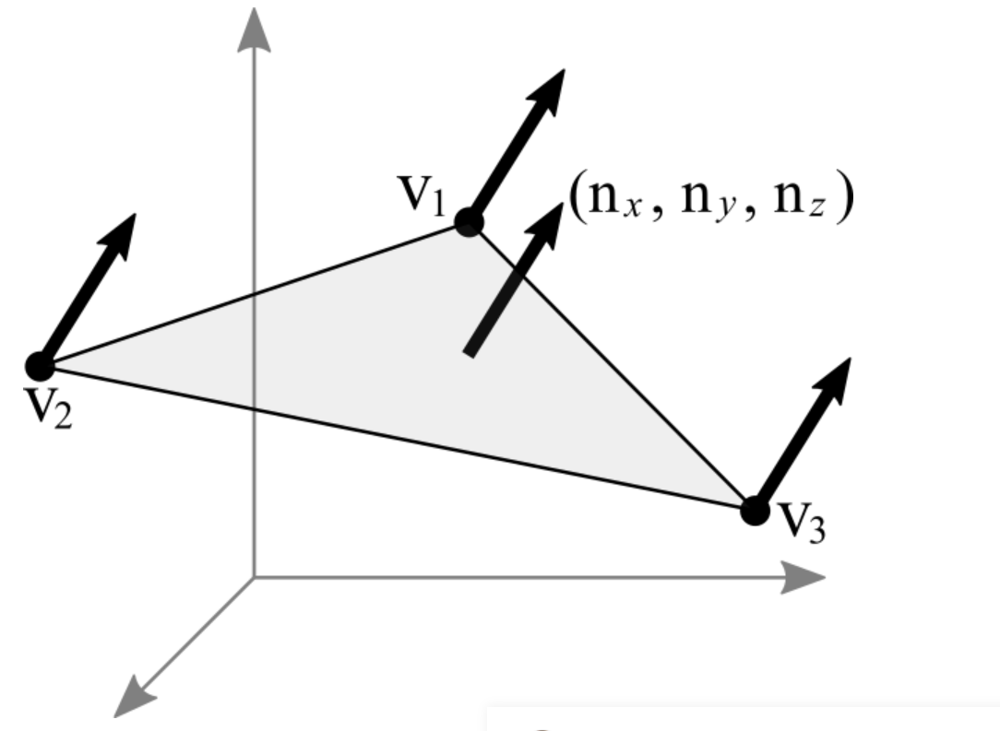

着色频率
着色频率表示了我们应该如何应用光源到物体表面，下图是一个示例。
图片来自 games101
上图中，第一个球体进行着色的时候每个面的颜色都一样，所以是基于一个面进行着色的，这部分操作可以在顶点着色器中实现。
第二个球体是基于顶点进行着色的，这样每个顶点都会基于它们所在面上的法向量和光源进行着色。这部分操作在顶点着色器中实现，然后把这个值通过
varying 类型的变量传递给片元着色器，webgl 会帮我们进行插值，最后得到第二个球体的效果。
第三个球体是基于像素进行着色的，我们通过
varying
类型插值的效果，对各个顶点的法向量进行插值，就像颜色的插值一样。最后会得到平面内每一个像素的法向量。
第三种方式显然计算成本更高，因为计算光照效果的代码从顶点着色器移动到了片元着色器，不过得到的效果更好。不过这种渲染是建立在我们知道我们想渲染什么模型的情况下实现的，也就是说第三种方式我们必须知道原本我们想要渲染模型是什么样，图中的例子就是个球，所以我们知道每个顶点的法向量就是从球心指向这个点的向量，从而法向量插值能正常进行。
从计算上来说，第一个球和第二个球的计算成本多很低，但是某些情况例外，顶点数超过了像素数的时候。看下面这张图。
图片来自 games101
从上到下，求的三角形数目更多了，这导致三中着色方式越来越相似。反观计算量呢，第一种和第二种就明显增加了很多，但是光照的计算还是在顶点着色器，只要顶点没像素多，渲染可以接受，计算成本肯定就比第三种低。有利有弊，实际开发需要根据实际场景选择着色方式。
顶点法向量
如果我们要使用前面说到的第三种着色方式，那么就要对每个顶点设置相应的法向量，然后对法向量进行插值。这些法向量是有一定规律的，比如一个球体，每个顶点的法向量就应该如下图所示：
图片来自 games101
不难看出，这个球体顶点的法向量其实就是基于球心到顶点的向量。
但是实际开发的时候图像千变万化，根本不会有那么巧的事情，所以必须有一个计算顶点法向量的方式。
一个顶点可以关联多个三角形，每个三角形都有一个法向量，图形学中使用就是用一个顶点关联的所有三角形的法向量进行一个相加然后归一化来定义这个顶点的中心坐标。如下图：

$N_v$ 就是这个顶点向量三角形法向量的和，但是这还不够准确，假如其中一个三角形很小，另一个很大的时候，大的三角形给中心坐标贡献的方向应该更大才对，所以还要加权求平均。
这没什么道理可言，也没有实际的验证，也是一个经验模型，但是这样求出来的顶点法向量大家都在使用。（这是闫老师的观点哈）
上诉的情况应用于复杂一点的模型中，但是对于非常规则的图形，我们并不需要使用上述方式计算法向量。比如在前面讲述的第一个球，每个面都像镜子一样，也就是说这个面上所有的法向量都是一致的，所以对于顶点的法向量就应该也是一致的，这可以用来渲染平整的模型，比如镜子，方块，棱锥等，这种图像某个面的示意图如下：

这样我们就算对顶点进行插值，三角形面上所有点的法向量都会一致。